THE GRILL The Publication For No Good Readers

There are many words that rhyme with "grill". Thrill, spill, pill, kill, dill even shrill. They all rhyme, and would all make excellent 'zine names. So, you ask, why did we pick "grill", possibly the most bland word on the entire list. And morever, why did we only have "ill" words to choose from. Well, the simple fact is that I'm not going to tell you, because you're probably not smart enough to understand anyway.
Hello, welcome to the first exciting issue of "Grill", a brand spanking new 'zine with today's woman in mind. Well, sort of, being that we always do have today's women on our minds, but that is besides the point. I'm writing this intro before we write anything else, so I have no idea what is going to happen beyond this point. You are warned, though. If you think you know weird people, you are wrong. Keep that in mind. We are weirder than you can possibly comprehend. But this is a good thing, I believe. So sit back and drink some cold beverage of your choice (unless it's Shasta. We REALLY don't like Shasta. Or Diet Rite. That stuff sucks real bad. In fact, just drink Faygo Moon Mist...) and leaf through this thing. Really. Go ahead. It's not like you have a choice or anything. We will become your mind, your soul, your very reason for living. And when its all said in done, all you'll get is an insatiable desire for bacon and a promise you'll be called in the morning that we'll NEVER EVER HEED! Anyway, have fun, unless you're Ken Fernandes. Then don't have fun.
Do any of you want to just stop reading this issue yet? I certainly do, after that opening paragraph. This issue of Grill is being written by a bunch of people who have been reading The Onion far too often, and as a result the entire issue will read like a second-rate version of said newspaper. But, I swear that next issue we will do something original, like making fun of women or something.
Speaking of women, has anyone noticed that those things are everywhere these days? I swear, I cannot go more than 50 feet in this town without seeing a woman. So enjoy this issue of Onion Rejects.
Actually, there are at least two articles that have nothing to do with the Onion, so go read those if you are so inclined. On a final note, I think we need a new GRILL ascii. I want to perpetually do the font, but I just found out that three of our regular writers thought that the Grill at the top was a treasure chest, so it looks like we need a new thingy-thing with texty-blockie-poos.
So make one, or die. And on another final note, this is the second smallest issue of Grill to date, due to my reluctance to beat past contributors [such as Captain Rat and Satan} with a stick and force them to write things.
THE GRILL issue #01
SEPTEMBER 29, 1996
1. ARTICLES
2. THE GRILL SHOP
3. ABOUT
4. HOME
(Close)